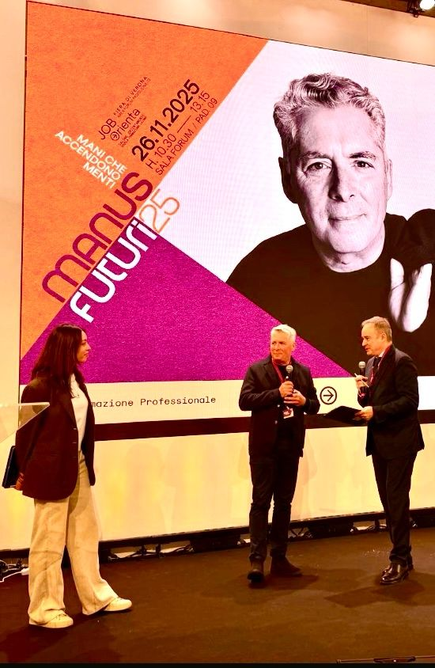

Aiuto le aziende ad adottare l'Intelligenza Artificiale come strumento per potenziare le persone, unendo competenze tecniche a una visione strategica dei processi aziendali.
Studentessa ITS Academy in AI Developer & Data Analysis con un solido background nel Luxury Hospitality Management e relazioni B2B executive. Credo che la trasformazione digitale non sia fatta solo di algoritmi, ma di persone da accompagnare nel cambiamento. Agisco come ponte tra esigenze di business e soluzioni tecniche, garantendo che la tecnologia resti uno strumento pragmatico e sostenibile. Mi specializzo nell'integrazione di soluzioni AI per ottimizzazione operativa, unendo competenze tecniche a capacità di traduzione delle esigenze business in soluzioni data-driven.
Guidare i team nell'adozione di soluzioni AI, semplificando la complessità e puntando sull'impatto concreto nel lavoro quotidiano.
Analisi esplorativa, pulizia e visualizzazione dati per estrarre insights azionabili.
Analisi della catena del valore per identificare dove l'AI può fare la differenza per le persone e per l'efficienza del business.
Raccolta requisiti, user testing e facilitazione workshop per progettare soluzioni AI che rispondono davvero alle esigenze degli utenti.
Corso Biennale ITS per Tecnico Superiore Data Manager - AMBITO: TRASFORMAZIONE DIGITALE
Scopri di più sul corso →Capacità di spiegare concetti complessi sia a pubblico tecnico che non
Approccio strutturato all'identificazione e risoluzione di sfide complesse
Esperienza nel coordinamento di team multi-funzionali e gestione risorse
Apprendimento rapido e adattamento a nuove tecnologie e contesti
Sicurezza nelle presentazioni e comunicazione a livello executive
Gestione aspettative e relazioni con stakeholder C-level
Sto costantemente lavorando a nuovi progetti che coinvolgono AI, Data Analysis e automazione. Visita il mio repository GitHub per esplorare il mio codice e i miei contributi.
Visita il mio GitHubUnisco competenze tecniche in AI e Data a esperienza in gestione aziendale e relazioni C-level
Traduco requisiti business complessi in soluzioni tecniche efficaci che portano risultati misurabili
L'esperienza nell'ospitalità di alto livello e come Account Manager Horeca Corporate mi ha formata all'ascolto dei bisogni e alla comunicazione del valore, doti che oggi applico per rendere la tecnologia accessibile.

Speaker @ Fiera di Verona con Fondazione Edulife
Sul palco di Job&Orienta ho condiviso la mia visione sul dialogo tra Intelligenza Umana e Artificiale. Partendo dal mio background nel management dell'hospitality e del vino, ho analizzato come l'AI possa diventare il "nuovo scalpello" per le PMI italiane.
Momento tratto dall'edizione 2025 dell'evento Job&Orienta, a Verona. Per i dettagli si rimanda al post originale su LinkedIn.
"L'AI non serve a spegnere i nostri segnali, ma ad amplificare il nostro potenziale umano."
Interessato a una collaborazione? Compila il modulo qui sotto o trovami sui social.